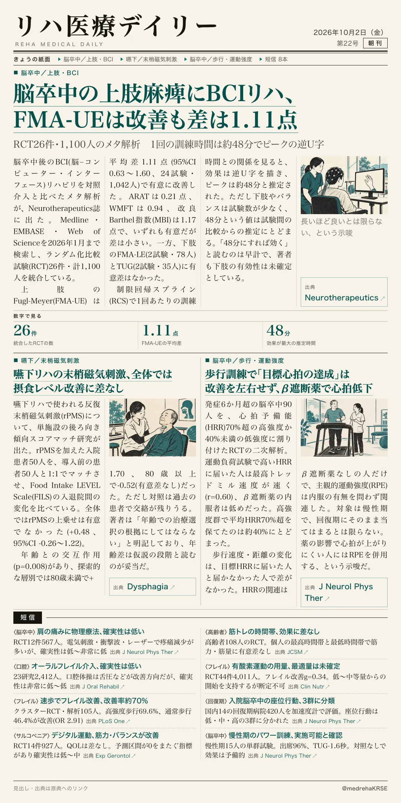
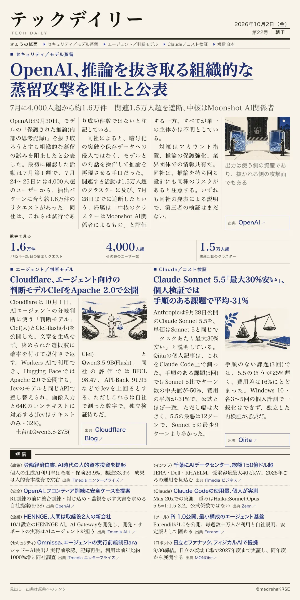

リハ医療デイリー
脳卒中の上肢麻痺にBCIリハ、FMA-UEは改善も差は1.11点
RCT26件・1,100人のメタ解析 1回の訓練時間は約48分でピークの逆U字
脳卒中後のBCIリハを対照介入と比べたメタ解析と用量反応解析。

テックデイリー
OpenAI、推論を抜き取る組織的な 蒸留攻撃を阻止と公表
7月に4,000人超から約1.6万件 関連1.5万人超を遮断、中核はMoonshot AI関係者
OpenAIがモデルの保護された推論を狙う蒸留の試みを阻止したと公表した。
